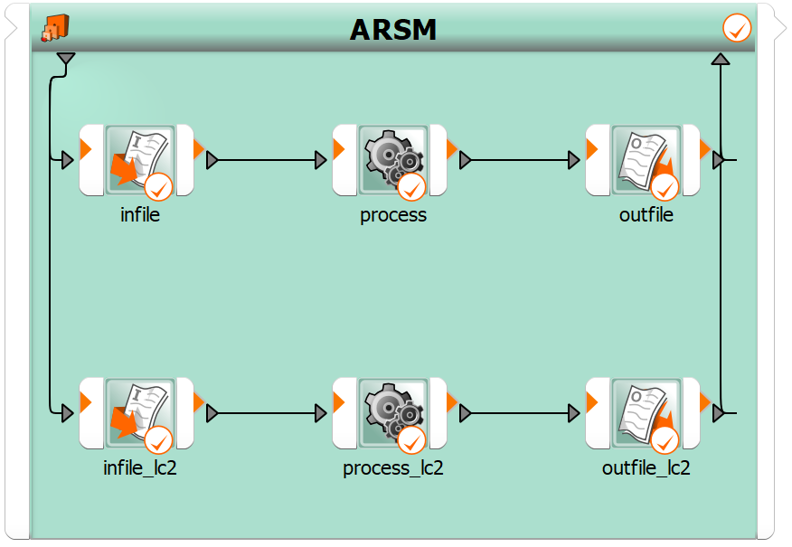

Note
Go to the end to download the full example code
Ten bar truss#
This example demonstrates how to to create an ARSM ten bar truss flow in batch mode.
First, the arsm_ten_bar_truss.py file is used to create an ARSM ten bar
truss flow. Then the ten_bar_modify_parameters.py and
ten_bar_truss_lc2.py files are used to modify the flow. Lastly, the project is
executed and a copy of the project is saved to a desired location.
Perform required imports#
Perform the required imports.
from ansys.optislang.core import Optislang
import ansys.optislang.core.examples as examples
Create optiSLang instance#
Create the optiSLang instance.
osl = Optislang()
print(osl)
Get paths of example scripts and run them#
Get the paths of the example scripts and then run these scripts.
paths1 = examples.get_files("arsm_ten_bar_truss")
paths2 = examples.get_files("ten_bar_modify_parameters")
paths3 = examples.get_files("ten_bar_truss_lc2")
osl.run_python_file(paths1[0])
osl.run_python_file(paths2[0])
osl.run_python_file(paths3[0])
Run workflow#
Run the workflow created by the preceding scripts.
osl.start()
Optionally save project#
If you want to save the project to some desired location, uncomment and edit these lines:
path = r'<insert-desired-location>'
osl.save_as(os.path.join(path, "test_project.opf"))
Stop and cancel project#
Stop and cancel the project.
osl.dispose()
View generated workflow#
This image shows the generated workflow.
{kind=link}
Total running time of the script: ( 0 minutes 0.000 seconds)